Alpha (v1.0.1)
Questão 91.
No cultivo por hidroponia, são utilizadas soluções nutritivas contendo macronutrientes e micronutrientes essenciais. Além dos nutrientes, o pH é um parâmetro de extrema importância, uma vez que ele afeta a preparação da solução nutritiva e a absorção dos nutrientes pelas plantas. Para o cultivo de alface, valores de pH entre 5,5 e 6,5 são ideais para o seu desenvolvimento.
As correções de pH são feitas pela adição de compostos ácidos ou básicos, mas não devem introduzir elementos nocivos às plantas. Na tabela, são apresentados alguns dados da composição da solução nutritiva de referência para esse cultivo. Também é apresentada a composição de uma solução preparada por um produtor de cultivo hidropônico.
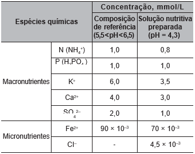Para correção do pH da solução nutritiva preparada, esse produtor pode empregar uma solução de
B) sulfato de cálcio, CaSO4.
C) óxido de alumínio, Al2O3.
D) cloreto de ferro (II), FeCl2.
E) hidróxido de potássio, KOH.
Questão 92.
O sino dos ventos é composto por várias barras metálicas de mesmo material e espessura, mas de comprimentos diferentes, conforme a figura.
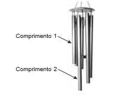Considere f1 e v1, respectivamente, como a frequência fundamental e a velocidade de propagação do som emitido pela barra de menor comprimento, e f2 e v2 são essas mesmas grandezas para o som emitido pela barra de maior comprimento.
As relações entre as frequências fundamentais e entre as velocidades de propagação são, respectivamente,
B) f1 < f2 e v1 < v2.
C) f1 < f2 e v1 < v2.
D) f1 < f2 e v1 < v2.
E) f1 < f2 e v1 < v2.
Questão 93.
O polvo mimético apresenta padrões cromáticos e comportamentos muito curiosos. Frequentemente, muda a orientação de seus tentáculos, assemelhando-se a alguns animais. As imagens 1, 3 e 5 apresentam polvos mimetizando, respectivamente, um peixe-linguado (2), um peixe-leão (4) e uma serpente-marinha (6).
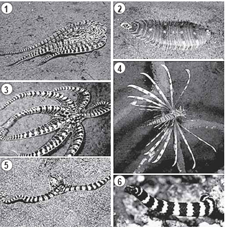Do ponto de vista evolutivo, a capacidade apresentada se estabeleceu porque os polvos.
B) a mudança de nome era impensável passaram por mutações similares a esses organismos.
C) observaram esses animais em seus nichos ecológicos.
D) resultaram de convergência adaptativa com essas espécies.
E) sobreviveram às pressões seletivas com esses comportamentos.
Questão 94.
A figura foi extraída de um antigo jogo para computadores, chamado Bang! Bang!.

No jogo, dois competidores controlam os canh√µes A e B, disparando balas alternadamente com o objetivo de atingir o canhão do adversário; para isso, atribuem valores estimados para o m√≥dulo da velocidade inicial de disparo (ùë¢O) e para o ângulo de disparo (q).
Em determinado momento de uma partida, o competidor B deve disparar; ele sabe que a bala disparada anteriormente, q = 53°, passou tangenciando o ponto P.
No jogo, é igual a 10 m/s2. Considere sen 53° = 0,8, cos 53° = 0,6 e desprezível a ação de forças dissipativas.
Com base nas distâncias dadas e mantendo o último ângulo de disparo, qual deveria ser, aproximadamente, o menor valor de que permitiria ao disparo efetuado pelo canhão B atingir o canhão A?
B) 35 m/s.
C) 40 m/s.
D) 45 m/s.
E) 50 m/s.
Questão 95.
Os pesticidas organoclorados foram amplamente empregados na agricultura, contudo, em razão das suas elevadas toxicidades e persistências no meio ambiente, eles foram banidos. Considere a aplicação de 500 g de um pesticida organoclorado em uma cultura e que, em certas condições, o tempo de meia-vida do pesticida no solo seja de 5 anos.
A massa do pesticida no decorrer de 35 anos será mais próxima de
B) 31,2 g.
C) 62,5 g.
D) 125,0 g.
E) 250,0 g.
Questão 96.
A sequência de nucleotídeos do RNA mensageiro presentes em um gene de um fungo, constituída de sete códons, está escrita a seguir.
Pesquisadores submeteram a sequência a mutações independentes. Sabe-se que os códons UAG e UAA são terminais, ou seja, indicam a interrupção da tradução.
Qual mutação produzirá a menor proteína?
B) Substituição de C por U no códon 4.
C) Substituição de G por C no códon 6.
D) Substituição de A por G no códon 7.
E) Deleção dos dois primeiros nucleotídeos no códon 5.
Questão 97.
A simples atitude de não jogar direto no lixo ou no ralo da pia o óleo de cozinha usado pode contribuir para a redução da poluição ambiental. Mas o que fazer com o óleo vegetal que não será mais usado? Não existe um modelo ideal de descarte, mas uma alternativa simples tem sido reaproveitá-lo para fazer sabão. Para isso, são necessários, além do próprio óleo, água e soda cáustica.
Com base no texto, a reação química que permite o reaproveitamento do óleo vegetal é denominada
B) epoxidação.
C) substituição.
D) esterificação.
E) saponificação.
Questão 98.
Durante o desenvolvimento embrionário humano ocorre uma comunicação entre os átrios direito e esquerdo através do forame oval (ou forame de Botal). Essa comunicação não causa prejuízos à circulação do bebê em formação, exceto se ela perdurar após o nascimento.
Os prejuízos no período embrionário são evitados porque a circulação fetal se assemelha à dos(as)
B) répteis, porque a mistura de sangue é minimizada por um metabolismo lento.
C) proeza da premiação de uma história ambientada no interior do Nordeste brasileiro. crocodilianos, porque a separação dos ventrículos impede a mistura sanguínea.
D) peixes, porque a circulação é simples, ocorrendo uma passagem única pelo coração.
E) anfíbios, porque pressões diferenciais isolam temporalmente o sangue venoso do arterial.
Questão 99.
Na cidade de São Paulo, as ilhas de calor são responsáveis pela alteração da direção do fluxo da brisa marítima que deveria atingir a região de mananciais. Mas, ao cruzar a ilha de calor, a brisa marítima agora encontra um fluxo de ar vertical, que transfere para ela energia térmica absorvida das superfícies quentes da cidade, deslocando-a para altas altitudes. Dessa maneira, há condensação e chuvas fortes no centro da cidade, em vez de na região de mananciais. A imagem apresenta os três subsistemas que trocam energia nesse fenômeno.
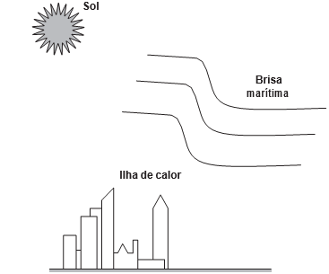No processo de fortes chuvas no centro da cidade de São Paulo, há dois mecanismos dominantes de transferência de calor: entre o Sol e a ilha de calor, e entre a ilha de calor e a brisa marítima.
Esses mecanismos são, respectivamente,
B) irradiação e irradiação.
C) condução e irradiação.
D) convecção e irradiação.
E) convecção e convecção.
Questão 100.
No seu estudo sobre a queda dos corpos, Aristóteles afirmava que se abandonarmos corpos leves e pesados de uma mesma altura, o mais pesado chegaria mais rápido ao solo. Essa ideia está apoiada em algo que é difícil de refutar, a observação direta da realidade baseada no senso comum. Após uma aula de física, dois colegas estavam discutindo sobre a queda dos corpos, e um tentava convencer o outro de que tinha razão:
Colega A: “O corpo mais pesado cai mais rápido que um menos pesado, quando largado de uma mesma altura. Eu provo, largando uma pedra e uma rolha. A pedra chega antes. Pronto! Tá provado!”.
Colega B: “Eu não acho! Peguei uma folha de papel esticado e deixei cair. Quando amassei, ela caiu mais rápido. Como isso é possível? Se era a mesma folha de papel, deveria cair do mesmo jeito. Tem que ter outra explicação!”.
O aspecto físico comum que explica a diferença de comportamento dos corpos em queda nessa discussão é o(a)
B) resistência do ar
C) massa dos corpos.
D) densidade dos corpos.
E) aceleração da gravidade.
Questão 101.
A obtenção de etanol utilizando a cana-de-açúcar envolve a fermentação dos monossacarídeos formadores da sacarose contida no melaço. Um desses formadores é a glicose (C6H12O6), cuja fermentação produz cerca de 50 g de etanol a partir de 100 g de glicose, conforme a equação química descrita.
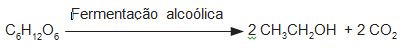Em uma condição específica de fermentação, obtém-se 80% de conversão em etanol que, após sua purificação, apresenta densidade igual a 0,80 g/mL. O melaço utilizado apresentou 50 kg de monossacarídeos na forma de glicose.
O volume de etanol, em litro, obtido nesse processo é mais próximo de
B) 20.
C) 25.
D) 64.
E) 100.
Questão 102.
É possível ligar aparelhos elétricos de baixa corrente utilizando materiais comuns de laboratório no lugar das tradicionais pilhas. A ilustração apresenta uma montagem que faz funcionar um cronômetro digital.

Utilizando a representação de projetos elétricos, o circuito equivalente a esse sistema é

B) 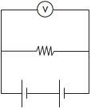
C) 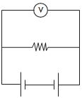
D)

E) 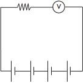
Questão 103.
Um técnico analisou um lote de analgésicos que supostamente estava fora das especificações. A composição prevista era 100 mg de ácido acetilsalicílico por comprimido (princípio ativo, cuja estrutura está apresentada na figura), além do amido e da celulose (componentes inertes). O técnico realizou os seguintes testes:
1) obtenção da massa do comprimido;
2) medição da densidade do comprimido;
3) verificação do pH com papel indicador;
4) determinação da temperatura de fusão do comprimido;
5) titulação com solução aquosa de NaOH.
Após a realização dos testes, o lote do medicamento foi reprovado porque a quantidade de ácido acetilsalicílico por comprimido foi de apenas 40% da esperada

O teste que permitiu reprovar o lote de analgésicos foi o de número
B) 2.
C) 3.
D) 4.
E) 5.
Questão 104.
O rompimento da barragem de rejeitos de mineração no município mineiro de Mariana e o derramamento de produtos tóxicos nas águas do Rio Doce, ocorridos em 2015, ainda têm consequências para os organismos que habitam o Parque Nacional Marinho de Abrolhos, localizado a mais de 1 000 quilômetros de distância. Esse desastre ambiental afetou o fitoplâncton, as esponjas, as algas macroscópicas, os peixes herbívoros e os golfinhos.
Concentrações mais elevadas dos compostos citados são encontradas em:
B) golfinhos.
C) fitoplâncton.
D) peixes herbívoros.
E) algas macroscópicas.
Questão 105.
Duas esferas carregadas com cargas iguais em m√≥dulo e sinais contrários estão ligadas por uma haste r√≠gida isolante na forma de haltere. O sistema se movimenta sob a√ß√£o da gravidade numa região que tem um campo magn√©tico horizontal uniforme (ùêµ), da esquerda para a direita. A imagem apresenta o sistema visto de cima para baixo, no mesmo sentido da acelera√ß√£o da gravidade (ùëî) que atua na região.

Visto de cima, o diagrama esquemático das forças magnéticas que atuam no sistema, no momento inicial em que as cargas penetram na região de campo magnético, está representado em

B)

C)

D)

E)

Questão 106.
A icterícia, popularmente conhecida por amarelão, é uma patologia frequente em recém-nascidos. Um bebê com icterícia não consegue metabolizar e excretar de forma eficiente a bilirrubina. Com isso, o acúmulo dessa substância deixa-o com a pele amarelada. A fototerapia é um tratamento da icterícia neonatal, que consiste na irradiação de luz no bebê. Na presença de luz, a bilirrubina é convertida no seu isômero lumirrubina que, por ser mais solúvel em água, é excretada pela bile ou pela urina. A imagem ilustra o que ocorre nesse tratamento.

Na fototerapia, a luz provoca a conversão da bilirrubina no seu isômero
B) funcional.
C) de cadeia.
D) de posição.
E) geométrico.
Questão 107.
Analisando a ficha técnica de um automóvel popular, verificam-se algumas características em relação ao seu desempenho. Considerando o mesmo automóvel em duas versões, uma delas funcionando a álcool e outra, a gasolina, tem-se os dados apresentados no quadro, em relação ao desempenho de cada motor.

Considerando desprezível a resistência do ar, qual versão apresenta a maior potência?
B) Como a versão a gasolina atinge o maior valor de energia cinética, esta é a que desenvolve a maior potência.
C) Como a versão a álcool apresenta a maior taxa de variação de energia cinética, esta é a que desenvolve a maior potência.
D) Como ambas as versões apresentam a mesma variação de velocidade no cálculo da aceleração, a potência desenvolvida é a mesma.
E) Como a versão a gasolina fica com o motor trabalhando por mais tempo para atingir os 100 km/h, esta é a que desenvolve a maior potência.
Questão 108.
TEXTO I
No cordel intitulado Senhor dos Anéis, de autoria de Gonçalo Ferreira da Silva, lê-se a sextilha:
A distância em relação
Ao nosso planeta amado
Pouco menos que a do Sol
Ele está distanciado
E menos denso que a água
Quando no normal estado
TEXTO II
Distâncias médias dos planetas ao Sol e suas densidades médias
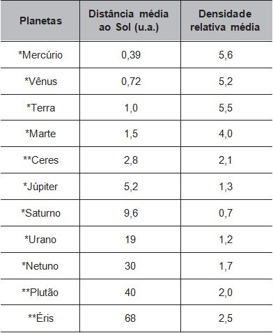
Considerando os versos da sextilha e as informações da tabela, a qual planeta o cordel faz referência?
B) Júpiter.
C) Urano.
D) Saturno.
E) Netuno.
Questão 109.
Cientistas da Universidade de New South Wales, na Austrália, demonstraram em 2012 que a Lei de Ohm é válida mesmo para fios finíssimos, cuja área da seção reta compreende alguns poucos átomos. A tabela apresenta as áreas e comprimentos de alguns dos fios construídos (respectivamente com as mesmas unidades de medida). Considere que a resistividade mantém-se constante para todas as geometrias (uma aproximação confirmada pelo estudo).

As resistências elétricas dos fios, em ordem crescente, são
B) R2 < R1 < R3 < R4.
C) R2 < R3 < R1 < R4.
D) R4 < R1 < R3 < R2.
E) R4 < R3 < R2 < R1.
Questão 110.
Organismos autótrofos e heterótrofos realizam processos complementares que associam os ciclos do carbono e do oxigênio. O carbono fixado pela energia luminosa ou a partir de compostos inorgânicos é eventualmente degradado pelos organismos, resultando em fontes de carbono como metano ou gás carbônico. Ainda, outros compostos orgânicos são catabolizados pelos seres, com menor rendimento energético, produzindo compostos secundários (subprodutos) que podem funcionar como combustíveis ambientais.
O processo metabólico associado à expressão combustíveis ambientais é a
B) fermentação.
C) quimiossíntese.
D) respiração aeróbica
E) fosforilação oxidativa.
Questão 111.
Uma escola iniciou o processo educativo para implantação da coleta seletiva e destino de materiais recicláveis. Para atingir seus objetivos, a instituição planejou:
1) sensibilizar a comunidade escolar, desenvolvendo atividades em sala e extraclasse de maneira contínua;
2) capacitar o pessoal responsável pela limpeza da escola quanto aos novos procedimentos adotados com a coleta seletiva; e
3) distribuir coletores de materiais recicláveis específicos nas salas, pátio e outros ambientes para acondicionamento dos resíduos.
Para completar a ação proposta no ambiente escolar, o que falta ser inserido no planejamento?
B) Firmar parceria com a prefeitura ou cooperativa de catadores para recolhimento dos materiais recicláveis e destinação apropriada.
C) Organizar visitas ao lixão ou aterro local para identificar aspectos importantes sobre a disposição final do lixo.
D) Divulgar na rádio local, no jornal impresso e nas redes sociais que a escola está realizando a coleta seletiva.
E) Colocar recipientes coletores de lixo reciclável fora da escola para entrega voluntária pela população.
Questão 112.
Os búfalos são animais considerados rústicos pelos criadores e, por isso, são deixados no campo sem controle reprodutivo. Por causa desse tipo de criação, a consanguinidade é favorecida, proporcionando o aparecimento de enfermidades, como o albinismo, defeitos cardíacos, entre outros. Separar os animais de forma adequada minimizaria a ocorrência desses problemas.
Qual procedimento biotecnológico prévio é recomendado nessa situação?
B) Terapia gênica.
C) Vacina de DNA.
D) Clonagem terapêutica.
E) Mapeamento genético.
Questão 113.
O ciclo do cobre é um experimento didático em que o cobre metálico é utilizado como reagente de partida. Após uma sequência de reações (I, II, III, IV e V), o cobre retorna ao seu estado inicial ao final do ciclo.
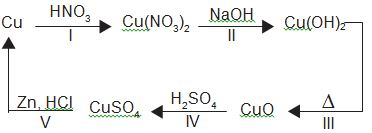
A reação de redução do cobre ocorre na etapa
B) II.
C) III.
D) IV.
E) V.
Questão 114.
Um dos exames clínicos mais tradicionais para medir a capacidade reflexa dos indivíduos é o exame do reflexo patelar. Esse exame consiste na estimulação da patela, um pequeno osso localizado na parte anterior da articulação do joelho, com um pequeno martelo. A resposta reflexa ao estímulo é caracterizada pelo levantamento da perna em que o estímulo foi aplicado.
Qual região específica do sistema nervoso coordena essa resposta?
B) Medula.
C) Cerebelo.
D) hipotálamo.
E) Neuro-hipófise.
Questão 115.
B) alumínio, cobre-aço e ferro.
C) cobre-aço, ferro e alumínio.
D) alumínio, ferro e cobre-aço.
E) ferro, alumínio e cobre-aço.
Questão 116.
As águas subterrâneas têm sido contaminadas pelo uso de pesticidas na agricultura. Entre as várias substâncias usualmente encontradas, algumas são apresentadas na figura. A distinção dessas substâncias pode ser feita por meio de uma análise química qualitativa, ou seja, determinando sua presença mediante a adição de um reagente específico. O hidróxido de sódio é capaz de identificar a presença de um desses pesticidas pela reação ácido-base de Brönsted-Lowry.
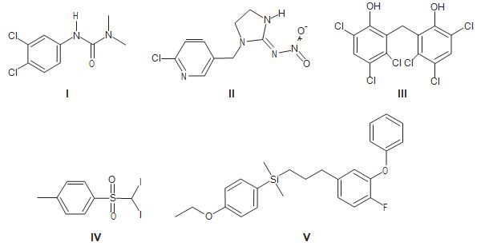
O teste positivo será observado com o pesticida
B) II
C) III
D) IV
E) V
Questão 117.
Com o aumento da população de suínos no Brasil, torna-se necessária a adoção de métodos para reduzir o potencial poluidor dos resíduos dessa agroindústria, uma vez que, comparativamente ao esgoto doméstico, os dejetos suínos são 200 vezes mais poluentes. Sendo assim, a utilização desses resíduos como matéria-prima na obtenção de combustíveis é uma alternativa que permite diversificar a matriz energética nacional, ao mesmo tempo em que parte dos recursos hídricos do país são preservados.
O biocombustível a que se refere o texto é o:
B) biogás.
C) butano.
D) metanol.
E) biodiesel.
Questão 118.
A curcumina, uma das substâncias que confere a cor alaranjada ao açafrão, pode auxiliar no combate à dengue quando adicionada à água de criadouros do mosquito transmissor. Essa substância acumula-se no intestino do inseto após ser ingerida com a água do criadouro e, quando ativada pela luz, induz a produção de espécies reativas de oxigênio que danificam de forma fatal o tecido do tubo digestório.
A forma de combate relatada tem como atividade o(a)
B) redução da eclosão dos ovos
C) comprometimento da metamorfose.
D) impedimento do desenvolvimento da larva.
E) repelência da forma transmissora da doença.
Questão 119.
Com o objetivo de identificar a melhor espécie produtora de madeira para construção (com resistência mecânica e à degradação), foram analisadas as estruturas anatômicas de cinco espécies, conforme o quadro.

Qual espécie corresponde ao objetivo proposto?
B) 2.
C) 3.
D) 4.
E) 5.
Questão 120.
No outono, as folhas das árvores mudam de cor, de verde para tons de amarelo, castanho, laranja e vermelho. A cor verde das folhas deve-se ao pigmento clorofila. Nas plantas de folhas caducas, a produção de clorofila diminui e o tom verde desvanece, permitindo assim que outros pigmentos, como o caroteno, de coloração amarelo-alaranjado, e a antocianina, de tons avermelhados, passem a dominar a tonalidade das folhas. A coloração observada se dá em função da interação desses pigmentos com a radiação solar.
Conforme apresentado no espectro de absorção, as moléculas de clorofila absorvem a radiação solar nas regiões do azul e do vermelho, assim a luz refletida pelas folhas tem falta desses dois tons e as vemos na cor verde. Já as antocianinas absorvem a luz desde o azul até o verde. Nesse caso, a luz refletida pelas folhas que contêm antocianinas aparece conforme as cores complementares, ou seja, vermelho-alaranjado.

Em qual faixa do espectro visível os carotenos absorvem majoritariamente?
B) Entre o azul e o verde.
C) Entre o verde e o amarelo.
D) Entre o amarelo e o laranja.
E) Entre o laranja e o vermelho.
Questão 121.
Entre 2014 e 2016, as regiões central e oeste da África sofreram uma grave epidemia de febre hemorrágica causada pelo vírus ebola, que se manifesta em até 21 dias após a infecção e cuja taxa de letalidade (enfermos que vão a óbito) pode chegar a 90%. Em regiões de clima tropical e subtropical, um outro vírus também pode causar febre hemorrágica: o vírus da dengue, que, embora tenha período de incubação menor (até 10 dias), apresenta taxa de letalidade abaixo de 1%.
Segundo as informações do texto e aplicando princípios de evolução biológica às relações do tipo patógeno-hospedeiro, qual dos dois vírus infecta seres humanos há mais tempo?
B) Dengue, pois o menor período de incubação reflete duração mais longa do processo de coevolução patógeno-hospedeiro.
C) Ebola, cuja alta letalidade indica maior eficiência do vírus em parasitar seus hospedeiros, estabelecida ao longo de sua evolução.
D) Ebola, cujos surtos epidêmicos concentram-se no continente africano, reconhecido como berço da origem evolutiva dos seres humanos.
E) Dengue, cuja baixa letalidade indica maior eficiência do vírus em parasitar seus hospedeiros, estabelecida ao longo da coevolução patógeno-hospedeiro.
Questão 122.
A imagem apresenta as etapas do funcionamento de uma estação individual para tratamento do esgoto residencial
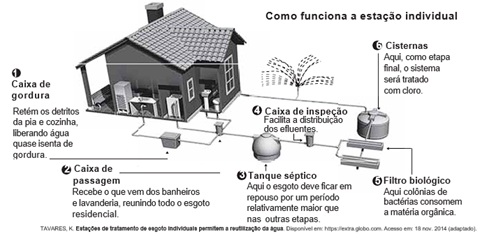
Em qual etapa decanta-se o lodo a ser separado do esgoto residencial
B) 2
C) 3
D) 5
E) 6
Questão 123.
O plantio por estaquia é um método de propagação de plantas no qual partes de um espécime são colocadas no solo para produzir novas gerações. Na floricultura, é comum utilizar o caule das roseiras para estaquia, pois a propagação da planta é positiva em razão da aplicação de auxinas na porção inferior do caule.
A utilização de auxinas no método de estaquia das roseiras contribui para
B) produção de gemas laterais.
C) formação de folhas maiores.
D) formação de raízes adventícias.
E) produção de compostos energéticos.
Questão 124.
O emprego de células de combustível a hidrogênio pode ser uma tecnologia adequada ao transporte automotivo.
O quadro apresenta características de cinco tecnologias mais proeminentes de células de combustível.
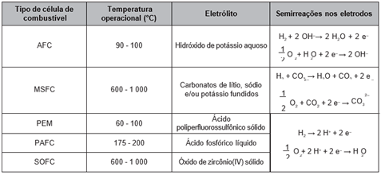
Testes operacionais com esses tipos de células têm indicado que as melhores alternativas para veículos são as que operam em baixos níveis de energia térmica, são formadas por membranas de eletrólitos poliméricos e ocorrem em meio ácido.
A tecnologia testada mais adequada para o emprego em veículos automotivos é a célula de combustível
B) MSFC.
C) PEM.
D) PAFC.
E) SOFC.
Questão 125.
Considere a tirinha, na situação em que a temperatura do ambiente é inferior à temperatura corporal dos personagens.
O incômodo mencionado pelo personagem da tirinha deve-se ao fato de que, em dias úmidos.
B) o suor apresenta maior dificuldade para evaporar do corpo.
C) a taxa de absorção de radiação pelo corpo torna-se maior.
D) o ar torna-se mau condutor e dificulta o processo de liberação de calor.
E) o vapor-d’água presente no ar condensa-se ao entrar em contato com a pele.
Questão 126.
Um garoto precisa montar um circuito que acenda três lâmpadas de cores diferentes, uma de cada vez. Ele dispõe das lâmpadas, de fios, uma bateria e dois interruptores, como ilustrado, junto com seu símbolo de três pontos. Quando esse interruptor fecha AB, abre BC e vice-versa.

O garoto fez cinco circuitos elétricos usando os dois interruptores, mas apenas um satisfaz a sua necessidade.
Esse circuito é representado por
B)

C)

D)

E) 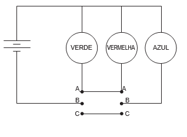
Questão 127.
Estudo aponta que a extinção de preguiças-gigantes, cuja base da dieta eram frutos e sementes, provocou impactos consideráveis na vegetação do Pantanal brasileiro. A flora, embora não tenha desaparecido, tornou-se menos abundante que no passado, além de ocupar áreas mais restritas.
O evento descrito com a flora ocorreu em razão da redução
B) do tamanho das plantas.
C) de fatores de disseminação das sementes.
D) da quantidade de sementes por fruto.
E) dos hábitats disponíveis para as plantas.
Questão 128.
Carros elétricos estão cada vez mais baratos, no entanto, os órgãos governamentais e a indústria se preocupam com o tempo de recarga das baterias, que é muito mais lento quando comparado ao tempo gasto para encher o tanque de combustível. Portanto, os usuários de transporte individual precisam se conscientizar dos ganhos ambientais dessa mudança e planejar com antecedência seus percursos, pensando em pausas necessárias para recargas.
Após realizar um percurso de 110 km, um motorista pretende recarregar as baterias de seu carro elétrico, que tem um desempenho médio de 5,0 km/kWh, usando um carregador ideal que opera a uma tensão de 220 V e é percorrido por uma corrente de 20 A.
Quantas horas são necessárias para recarregar a energia utilizada nesse percurso?
B) 0,125
C) 2,5
D) 5,0
E) 8,0
Questão 129.
Nas angiospermas, além da fertilização da oosfera, existe uma segunda fertilização que resulta num tecido triploide.
Essa segunda fertilização foi importante evolutivamente, pois viabilizou a formação de um tecido de
B) reserva para o embrião.
C) revestimento para a semente.
D) proteção para o megagametófito.
E) vascularização para a planta jovem.
Questão 130.
Com o objetivo de proporcionar aroma e sabor a diversos alimentos, a indústria alimentícia se utiliza de flavorizantes. Em geral, essas substâncias são ésteres, como as apresentadas no quadro.
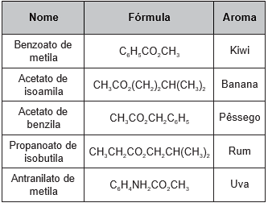
O aroma do flavorizante derivado do ácido etanoico e que apresenta cadeia carbônica saturada é de
B) banana.
C) pêssego.
D) rum.
E) uva.
Questão 131.
O eletrocardiograma é um exame cardíaco que mede a intensidade dos sinais elétricos advindos do coração. A imagem apresenta o resultado típico obtido em um paciente saudável e a intensidade do sinal (VEC ) em função do tempo.
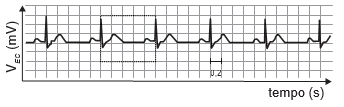
De acordo com o eletrocardiograma apresentado, qual foi o número de batimentos cardíacos por minuto desse paciente durante o exame?
B) 60.
C) 100.
D) 120.
E) 180.
Questão 132.
A deficiência de lipase ácida lisossômica é uma doença hereditária associada a um gene do cromossomo 10. Os pais dos pacientes podem não saber que são portadores dos genes da doença até o nascimento do primeiro filho afetado. Quando ambos os progenitores são portadores, existe uma chance, em quatro, de que seu bebê possa nascer com essa doença.
Essa é uma doença hereditária de caráter
B) dominante.
C) codominante.
D) poligênico.
E) polialélico.
Questão 133.
O quadro lista alguns dispositivos eletrônicos que estão presentes no dia a dia, bem como a faixa de força eletromotriz necessária ao seu funcionamento.
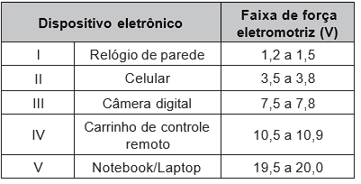
Considere que uma bateria é construída pela associação em série de três pilhas de lítio-iodo, nas condições-padrão, conforme as semiequações de redução apresentadas.
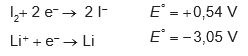
Essa bateria é adequada para o funcionamento de qual dispositivo eletrônico?
B) II.
C) III.
D) IV.
E) V.
Questão 134.
O alcoolômetro Gay Lussac é um instrumento destinado a medir o teor de álcool, em porcentagem de volume (v/v), de soluções de água e álcool na faixa de 0 °GL a 100 °GL, com divisões de 0,1 °GL. A concepção do alcoolômetro se baseia no princípio de flutuabilidade de Arquimedes, semelhante ao funcionamento de um densímetro. A escala do instrumento é aferida a 20 °C, sendo necessária a correção da medida, caso a temperatura da solução não esteja na temperatura de aferição. É apresentada parte da tabela de correção de um alcoolômetro, com a temperatura.
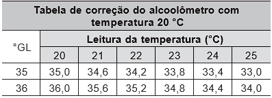
É necessária a correção da medida do instrumento, pois um aumento na temperatura promove o(a)
B) aumento da densidade da água e do álcool.
C) mudança do volume dos materiais por dilatação.
D) aumento da concentração de álcool durante a medida.
E) alteração das propriedades químicas da mistura álcool e água.
Questão 135.
O Prêmio Nobel de Química de 2000 deveu-se à descoberta e ao desenvolvimento de polímeros condutores. Esses materiais têm ampla aplicação em novos dispositivos eletroluminescentes (LEDs), células fotovoltaicas etc. Uma propriedade-chave de um polímero condutor é a presença de ligações duplas conjugadas ao longo da cadeia do polímero.
Um exemplo desse polímero é representado pela estrutura
B) 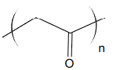
C)

D)

E) 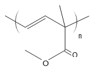